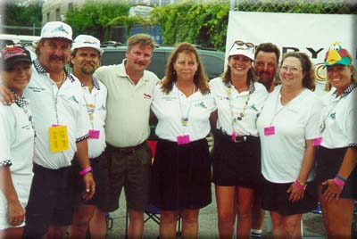
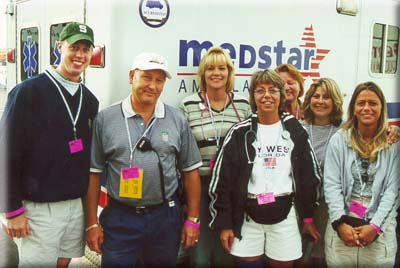
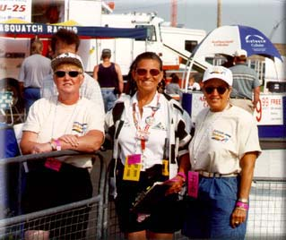
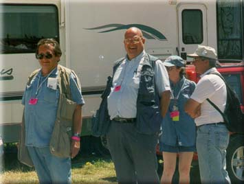
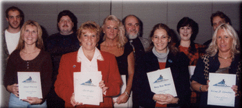

|
Founded in 1962, Spirit Of Detroit THUNDERFEST is a not-for-profit corporation.
Its corps of civic-minded volunteers are dedicated to supporting, promoting
and perpetuating power boat racing on the Detroit River. Coming from all
walks of life and professions, these 600 volunteers provide the 'people
power' necessary to stage Metro Detroit's most spectacular summer event!
(More information below)
 Some of the crew at Judge's Stand. (Photo copyright 2000 by Joe Dabliz)
 Some of the medic crew. (Photo copyright 2000 by Joe Dabliz)
 Judy Warren-Wright (center) with some of the Pit Corner Crew. (Photo copyright 2000 by Joe Pfeiffer)
 Two of the SODT photogs, Joe Pfeiffer and Joe Dabliz. (Photo copyright 2000 by Don Smith)
A working volunteer is committed to work a minimum of 30 hours per membership year. Membership begins October 1 and expires September 30, the annual cost is $30. Volunteer perks include - membership card, souvenir race program, race week credential (this gets you in the pits for ALL days of the event!), 2 souvenir t-shirts, souvenir hat, coffee, donuts, and lunch race week, refreshments and snacks 1 hour after course closes, and invitations to all Thunderfest events. As with most membership organizations, you will be assigned to a specific committee needing additional assistance as determined by the committee chairman and/or membership coordinator. Please keep in mind that many of our volunteers take time out of their regular work schedule to be a part of race week activities and to fulfill their 30-hour commitment. Please join us in staging one of Metro Detroit's largest civic events. Download the 2003 Volunteer Application form (a .PDF file)
 Here is a photo of a group receiving their 5-year appreciation award (1996).
All contents Copyright © 1997-2003 Spirit of Detroit THUNDERFEST, except where noted.
Web page created by Brian Reed.
|